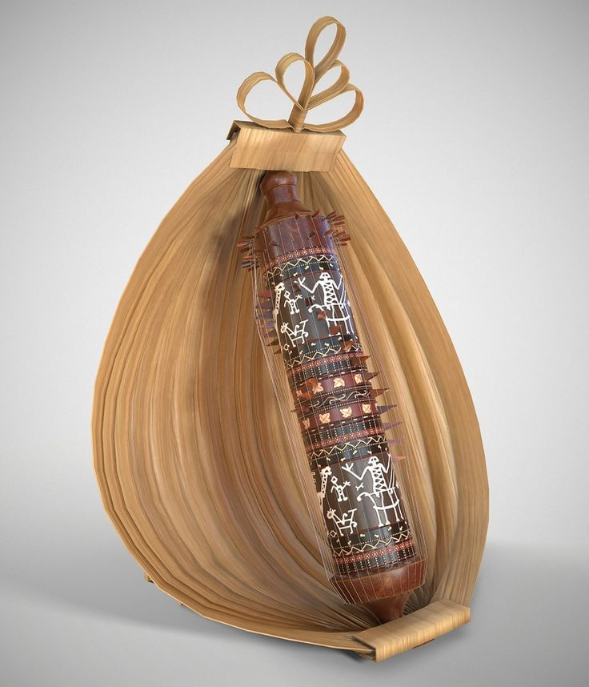

Rote
Sasando
Rote Ndao
Alat musik petik khas Rote yang terbuat dari daun lontar dengan suara melodi yang unik dan menenangkan.
SelengkapnyaMUSIK & TARI
Dari dentingan sasando hingga dinamika tari caci, seni NTT adalah ekspresi filosofi dan spiritualitas yang hidup
NTT memiliki kekayaan seni dan musik tradisional yang unik, mencerminkan filosofi dan spiritualitas masyarakat setempat. Dari alat musik sasando yang indah hingga tarian perang caci yang dinamis, setiap seni di NTT memiliki makna mendalam.
Setiap pertunjukan seni tradisional NTT terhubung dengan upacara adat, syukuran panen, dan ritual spiritual, menjadikannya bagian integral dari kehidupan sosial dan spiritual masyarakat.
Rote Ndao
Alat musik petik khas Rote yang terbuat dari daun lontar dengan suara melodi yang unik dan menenangkan.
Selengkapnya
Manggarai, Flores Barat
Tarian perang cambuk yang menampilkan duel satu lawan satu dengan ketegangan dan keberanian tinggi.
SelengkapnyaManggarai, Flores
Tarian panen yang dibawakan perempuan Manggarai dengan gerakan gemulai dan penuh kegembiraan.
Selengkapnya
Manggarai, Flores Barat
Gamelan tradisional Manggarai dengan nada khas yang digunakan dalam upacara adat dan ritual penting.
SelengkapnyaBajawa, Ngada
Tarian gembira khas suku Ngada yang energik, dibawakan secara berkelompok dalam perayaan adat.
Selengkapnya